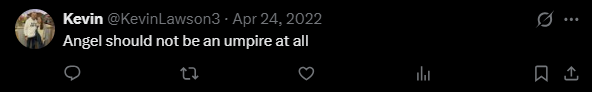
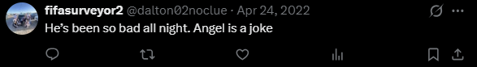
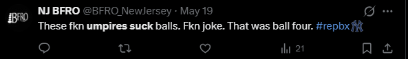

01
Camera Angle
The TV broadcast shows the pitch from an offset center-field camera angle designed for viewers. The umpire sees the pitch from directly behind home plate, which creates a different perspective on pitch location.
Fans today often criticize umpires for controversial calls behind the plate. However, behind home plate, an umpire gets just one look at a pitch traveling nearly 85 to 100 mph, on average.
In the 9th inning of a one-run game, Kyle Schwarber faced Josh Hader and was called out on a controversial strike three. Schwarber exploded, fans were furious, and one split-second call became the center of the game.
Fans were not happy.
See how fans reacted to this call.



Fans see the replay. Umpires see it once.
One pitch. One angle. One split-second call. One chance.
Think you could do better than the umpires in the MLB? Let's keep going then!
On screen, a pitch can feel clear and decisive. The broadcast gives fans a clean, replayable angle that differs from the split-second view the umpire has behind home plate.
Jacob Misiorowski, a pitcher for the Milwaukee Brewers, fired a 100 mph fastball in the clip above. The umpire had only tenths of a second to make a judgment call in real time, and the pitch was ruled a strike despite appearing to miss the zone on replay.
Umpires do not get a perfect TV angle, a pause button, or time to debate the zone. The decision has to happen immediately as the pitch crosses the plate.
The TV broadcast shows the pitch from an offset center-field camera angle designed for viewers. The umpire sees the pitch from directly behind home plate, which creates a different perspective on pitch location.
Fans have the leeway to pause, rewind, and judge a pitch after watching multiple replays. Umpires must make a final call in real time, often within tenths of a second, with no opportunity for a second look.
The TV strike zone box is a broadcast overlay that helps viewers visualize the pitch, but umpires do not see it. They must judge the pitch’s height, width, and movement in real time without that reference.
Watching a pitch is not the same as calling it. Fans see the game through a replayable broadcast, while umpires have one live look at a fast-moving pitch and only a split second to decide.
The broadcast view makes the pitch feel easier to judge, but the umpire sees the play from a crowded space behind the catcher. This section shifts from the fan’s clean replay angle to the real-time view behind home plate.
From the umpire’s position, the catcher’s setup, the batter’s movement, glove framing, and pitch speed all come together in a single split-second judgment. There is no clean broadcast angle, only a live pitch crossing the plate in real time, with no time to think or input from anyone else.
The umpire is close to the zone, but the catcher’s body and glove can make the pitch harder to read.
A high-velocity pitch reaches the plate in less than half a second, leaving very little time to process the call.
The umpire has to judge the strike zone without the digital box fans often see on TV.
Mark Wegner, an umpire working Game 3 of the World Series, is shown in the view behind the plate. The ball reaches the plate very quickly, and the umpire must make a call at full speed through traffic, with no replay advantage.
Fan have all the time in the world to watch, replay, and judge the pitch. The umpire must track it from the moment it leaves the pitcher’s hand, judge its location in real time, and make an instant call from behind the catcher.
You are dropped into a real MLB game from June 2025. Scroll through every pitch the umpire had to judge, including the locations, the calls, and the ones they got wrong.
Before stepping behind the plate yourself, explore how MLB umpires performed throughout June 2025. Compare league-wide trends with sortable rankings that highlight accuracy, consistency, and workload behind the plate.
Most MLB umpires correctly call the vast majority of pitches, but even small percentage differences matter. Across thousands of pitches, a one or two percent gap in accuracy can translate to hundreds of additional missed or correct calls over the course of a season.
Before you begin, read the instructions to learn how the game works. Your goal is to judge each pitch as either a ball or a strike.
You will see one pitch at a time from the umpire’s view behind home plate.
For the first 3 pitches, the strike zone will be visible so you can practice.
After the practice pitches, the strike zone disappears and you must call each pitch without the guide.
The faster the pitch, the quicker it reaches the plate, giving you less time to track the ball and see where it crosses.
If any part of the ball touches the strike zone, call it a strike. Otherwise, call it a ball.
The game ends when you make 3 mistakes. Results will be calculated after the game!
Make the correct call. Every correct ball or strike earns points. Incorrect calls earn no points and cost one out.
Tougher pitches are worth more. Borderline pitches near the edge of the strike zone award more points than obvious pitches.
Fast decisions earn a bonus. Calling the pitch quickly can add extra points to a correct answer.
Build a streak multiplier. Consecutive correct calls increase your multiplier, up to 5× points. A missed call resets the streak.
Practice pitches award fewer points. The first three pitches have the strike zone visible, so they are worth only a small portion of the normal score.
After playing as an umpire, let's now compare your accuracy to the June 2025 MLB average and measure your decision speed against estimated MLB call times.
Finish a game to see your comparison.
Finish a game to see your comparison.
Think that was tough? You just experienced the easiest version of the job. Real umpires make every call in real time, under conditions far less forgiving.
No time to think. Balls and strikes are called live and final. The call is made the moment the pitch crosses the plate.
Too fast to process. Every pitch reaches the plate in a fraction of a second.
Obstructed view. Glove framing, the catcher’s body, and the batter’s stance can all block a clear look at the strike zone.
No strike zone on the field. There is no overlay to rely on. The umpire has to visualize the zone and adjust it to every hitter.
100+ calls a night. Focus has to stay locked in through heat, cold, rain, and extra innings.
Everyone is watching. Forty thousand fans, both dugouts, and a game on the line. Every pitch on the edge becomes a debate.
The version you played was the easy one — you had a clean view, extra time to think, and no real consequences for being wrong. Real umpires don’t get that luxury. They have to make every call in real time, with imperfect sightlines, no replay in the moment, and the weight of the decision sticking immediately. Once it’s called, they have to live with it. The next time a pitch barely misses or catches the corner, it might be worth giving them a little credit.